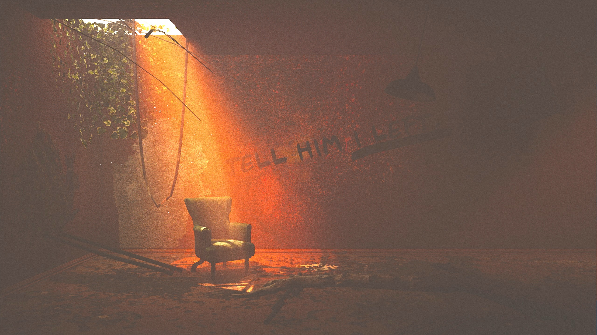
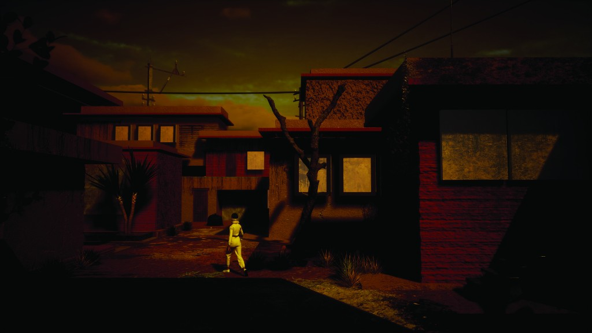
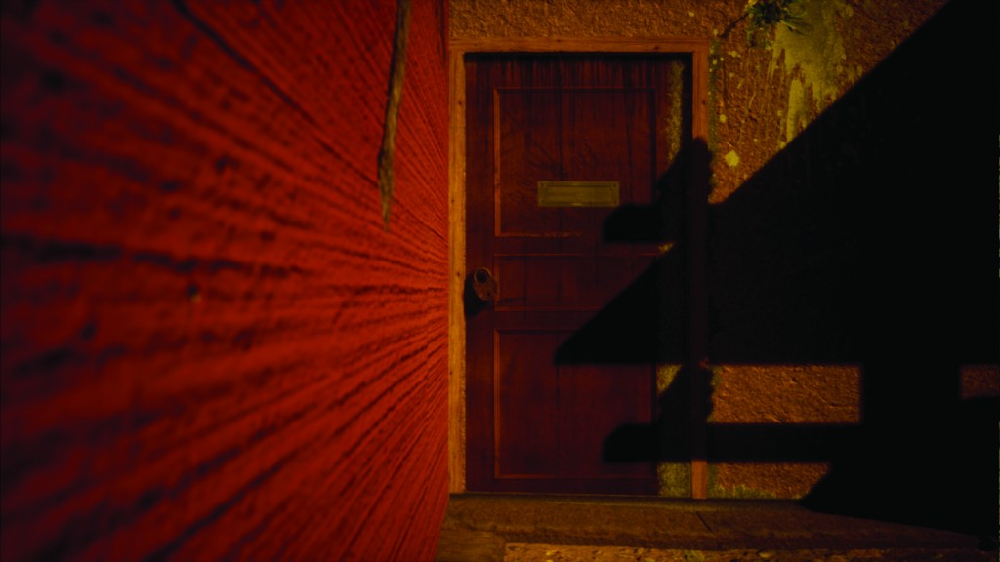

Worldbuilding · Cinematic Environment
Moyali is a world that glorifies inner sanctity and peace to the extent that any form of self expression is banned, and celibacy, meditation and abstention are mandated.


